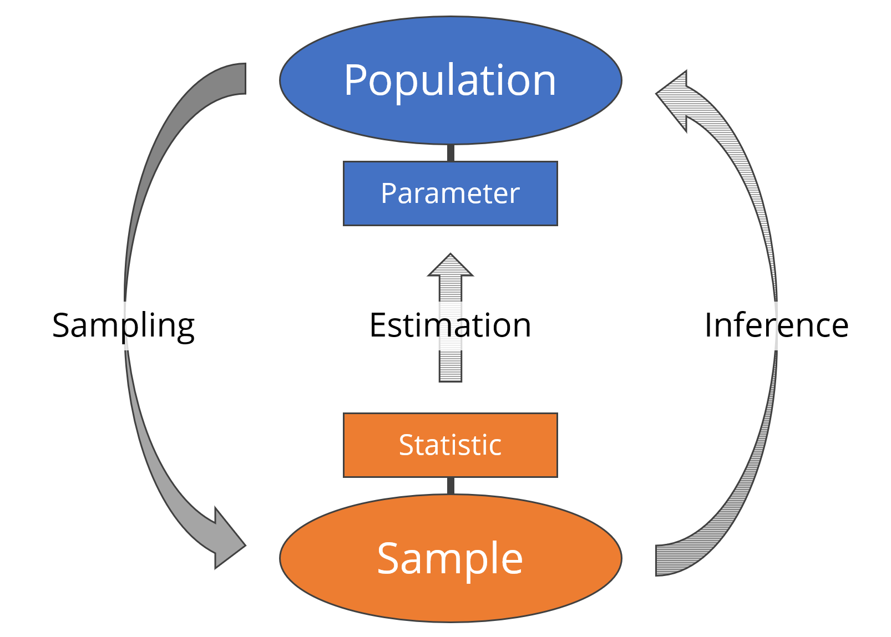
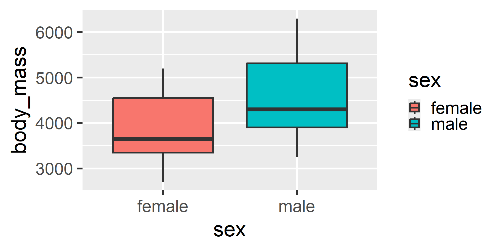
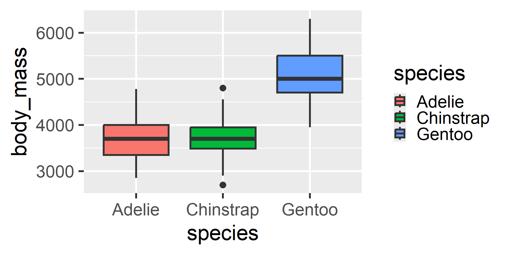
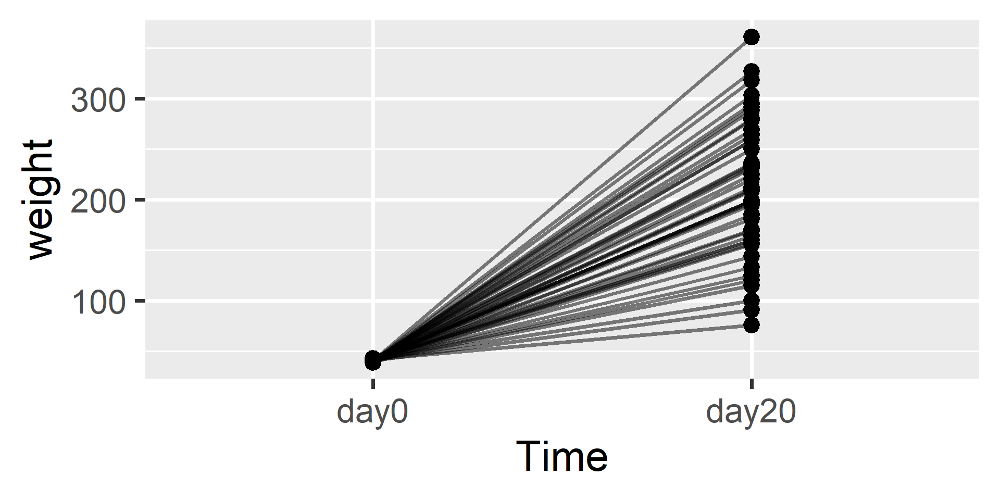

library(tidyverse) # data prep and visualization
library(afex) # fitting ANOVA statistical models
library(easystats) # extracting info from models
library(marginaleffects) # needed by easystatsFoundations of
Data Science
Spring 2026 | Data 2 (399)
Jeffrey M. Girard | Lecture 10a

Roadmap
Understand the difference between samples and populations
Learn the structure of independent and dependent groups
Run group comparisons using
afexandeasystats
EDA vs. Inference
The Trap of the Sample
- We have been turning data into tables and figures
- This is called Exploratory Data Analysis (EDA)
- This only tells us about our specific data
- These tables and figures don’t tell us whether the patterns we saw are universally true
- We often want to generalize beyond our data
- If Group A has a higher mean than Group B in our data, is that also true more broadly?
Populations vs. Samples
- The Population is the entire group we want to understand
- e.g., All penguins in Antarctica
- We rarely have access to the whole population
- The Sample is the subset of data we actually collected
- e.g., The 344 penguins in our dataset
- Samples are imperfect but may be all we have
Parameters vs. Statistics
- A Parameter is the “true” number in the population
- e.g., the real average body mass of all penguins in Antarctica
- This number is fixed, but we usually do not know it
- A Statistic is the number we calculate from our sample
- e.g., the average body mass of the penguins we happened to catch
- We use the statistic to estimate the parameter
- Sampling Uncertainty is the idea that every sample is different
- If we catch 10 different penguins, our statistic will change slightly
- Statistical tests help us decide if patterns in our sample are “real”
Mapping the Connections

Why Compare Groups?
Comparing groups is a fundamental tool in Data Science. It allows us to move from simply describing data to evaluating impact and making decisions.
- Basic Science (Discovery)
- Are there natural differences between categories?
- e.g., Do Adelie penguins differ in body mass from Gentoo penguins?
- Applied Science (Intervention)
- Does a specific treatment or change have a real effect?
- e.g., Does a new medication lower blood pressure more than a placebo?
- Business & Tech (Optimization)
- Which strategy leads to better outcomes?
- e.g., A/B Testing: Does a red “Buy” button generate more revenue than a blue one?
Group Designs
How is the Data Structured?
Before running any tests, R needs to know how the groups are related.
- Independent Groups (Between-Subjects)
- Comparing completely different entities
- e.g., (Male vs. Female) or (Adelie vs. Chinstrap vs. Gentoo) penguins
- Dependent Groups (Within-Subjects / Repeated Measures)
- Comparing the exact same entities across different conditions
- e.g., The Same Penguin Chicks on (Day 0 vs. Day 10 vs. Day 20)
Setup: Packages
Two Independent Groups
1. Preparing the Data
We will use the penguins dataset to compare body mass between Males and Females.
data("penguins", package = "datasets")
dat1 <-
penguins |>
drop_na(body_mass, sex) |> # Remove penguins with missing data
mutate(
id = row_number(), # afex requires an explicit ID column
sex = factor(sex) # treat sex as a categorical variable
) |>
select(id, sex, body_mass) # select only used variables
glimpse(dat1)Rows: 333
Columns: 3
$ id <int> 1, 2, 3, 4, 5, 6, 7, 8, 9, 10, 11, 12, 13, 14, 15, 16, 17, 1…
$ sex <fct> male, female, female, female, male, female, male, female, ma…
$ body_mass <int> 3750, 3800, 3250, 3450, 3650, 3625, 4675, 3200, 3800, 4400, …2. Exploring our Sample

3. The Omnibus Test
The aov_ez() function tells us if there are any differences between our groups. Since there are only two groups here, this is mathematically identical to an independent t-test.
ANOVA estimation for factorial designs using 'afex'
Parameter | Sum_Squares | df | Mean_Square | F | p
------------------------------------------------------------
sex | 3.89e+07 | 1 | 3.89e+07 | 72.96 | < .001
Residuals | 1.76e+08 | 331 | 5.33e+05 | |
Anova Table (Type 3 tests)Interpretation: The significant result (p < .001) means the effect of sex is statistically significant. This provides strong evidence to suggest that, in the broader population, the true average body mass differs between male and female penguins.
4. Mean Estimates
We use estimate_means() to guess what the group means are in the population
We can also plot those model-based estimates (and, optionally, the sample data)
Estimated Marginal Means
sex | Mean | SE | 95% CI | t(331)
------------------------------------------------------
female | 3862.27 | 56.83 | [3750.48, 3974.06] | 67.96
male | 4545.68 | 56.32 | [4434.90, 4656.47] | 80.71
Variable predicted: body_mass
Predictors modulated: sex
Predictors averaged: idThree Independent Groups
1. Preparing the Data
What if we have more than two groups? We use the exact same functions. Let’s start by looking at our penguins data again. We will use the species variable to illustrate this, as there are 3 species represented in this sample.
Rows: 342
Columns: 3
$ id <int> 1, 2, 3, 4, 5, 6, 7, 8, 9, 10, 11, 12, 13, 14, 15, 16, 17, 1…
$ species <fct> Adelie, Adelie, Adelie, Adelie, Adelie, Adelie, Adelie, Adel…
$ body_mass <int> 3750, 3800, 3250, 3450, 3650, 3625, 4675, 3475, 4250, 3300, …2. Exploring our Sample

3. The Omnibus Test
Now we swap between = "sex" to between = "species".
ANOVA estimation for factorial designs using 'afex'
Parameter | Sum_Squares | df | Mean_Square | F | p
-------------------------------------------------------------
species | 1.47e+08 | 2 | 7.34e+07 | 343.63 | < .001
Residuals | 7.24e+07 | 339 | 2.14e+05 | |
Anova Table (Type 3 tests)Interpretation: The significant result (p < .001) suggests that the true average body mass in the population is not identical across all three species. This gives us evidence that species is related to mass, though we cannot yet say which specific ones differ.
4. Estimating Means
Estimated Marginal Means
species | Mean | SE | 95% CI | t(339)
---------------------------------------------------------
Adelie | 3700.66 | 37.62 | [3626.67, 3774.66] | 98.37
Chinstrap | 3733.09 | 56.06 | [3622.82, 3843.36] | 66.59
Gentoo | 5076.02 | 41.68 | [4994.03, 5158.00] | 121.78
Variable predicted: body_mass
Predictors modulated: species
Predictors averaged: id5. Contrasting Groups
The estimate_contrasts() function automatically tests all pairs and adjusts the p-values to protect us from false positives (due to multiple tests).
Marginal Contrasts Analysis
Level1 | Level2 | Difference | SE | 95% CI | t(339) | p
---------------------------------------------------------------------------------
Chinstrap | Adelie | 32.43 | 67.51 | [-100.37, 165.22] | 0.48 | 0.631
Gentoo | Adelie | 1375.35 | 56.15 | [1264.91, 1485.80] | 24.50 | < .001
Gentoo | Chinstrap | 1342.93 | 69.86 | [1205.52, 1480.34] | 19.22 | < .001
Variable predicted: body_mass
Predictors contrasted: species
Predictors averaged: id
p-value adjustment method: Holm (1979)Interpretation: We found significant differences (p < .001) when comparing Gentoos to both Adelies and Chinstraps, suggesting these mass differences likely exist in the population. However, the difference between Chinstraps and Adelies was not significant (p > .05), meaning we lack evidence to say their true population means differ.
Two Dependent Groups
1. Preparing the Data
When testing the same subjects multiple times, the data must be in a long format. We will use the ChickWeight dataset to see if chicks gained weight between Day 0 and Day 20.
Rows: 96
Columns: 3
$ Chick <ord> 1, 1, 2, 2, 3, 3, 4, 4, 5, 5, 6, 6, 7, 7, 8, 8, 9, 9, 10, 10, 1…
$ Time <fct> day0, day20, day0, day20, day0, day20, day0, day20, day0, day20…
$ weight <dbl> 42, 199, 40, 209, 43, 198, 42, 160, 41, 220, 41, 160, 41, 288, …2. Exploring our Sample
For dependent groups, it is helpful to connect the same participants with lines to see how they change over time.

3. The Omnibus Test
To tell R to run a dependent test, swap the between argument for within
ANOVA estimation for factorial designs using 'afex'
Parameter | Sum_Squares | Sum_Squares_Error | df | df (error) | Mean_Square | F | p
---------------------------------------------------------------------------------------------
Time | 6.54e+05 | 1.01e+05 | 1 | 45 | 2236.65 | 292.42 | < .001
Anova Table (Type 3 tests)Interpretation: The significant p-value (p < .001) provides strong evidence that chicks in this population gain weight over time. It suggests the true average weight at Day 20 is higher than at Day 0, assuming our sample is representative.
4. Mean Estimates
The plot() function automatically accounts for the repeated measures structure when visualizing the average weights at each Time
Estimated Marginal Means
Time | Mean | SE | 95% CI | t(45)
-------------------------------------------------
day0 | 41.09 | 0.17 | [ 40.75, 41.42] | 246.20
day20 | 209.72 | 9.81 | [189.97, 229.47] | 21.39
Variable predicted: weight
Predictors modulated: Time
Predictors averaged: ChickThree Dependent Groups
1. Preparing the Data
Let’s scale up again. How did the growth trajectory look if we include Day 10?
Rows: 145
Columns: 3
$ Chick <ord> 1, 1, 1, 2, 2, 2, 3, 3, 3, 4, 4, 4, 5, 5, 5, 6, 6, 6, 7, 7, 7, …
$ Time <fct> day0, day10, day20, day0, day10, day20, day0, day10, day20, day…
$ weight <dbl> 42, 93, 199, 40, 103, 209, 43, 99, 198, 42, 87, 160, 41, 106, 2…2. Exploring our Sample

3. The Omnibus Test
ANOVA estimation for factorial designs using 'afex'
Parameter | Sum_Squares | Sum_Squares_Error | df | df (error) | Mean_Square | F | p
-----------------------------------------------------------------------------------------------
Time | 6.62e+05 | 1.16e+05 | 1.11 | 50.13 | 2306.78 | 257.45 | < .001
Anova Table (Type 3 tests)Interpretation: The significant p-value (p < .001) indicates that the true average weight of the population likely does not stay constant across these three time points. This points to a broader growth trend beyond just our specific sample.
4. Estimating Means
Estimated Marginal Means
Time | Mean | SE | 95% CI | t(45)
-------------------------------------------------
day0 | 41.09 | 0.17 | [ 40.75, 41.42] | 246.20
day10 | 109.72 | 3.30 | [103.07, 116.36] | 33.25
day20 | 209.72 | 9.81 | [189.97, 229.47] | 21.39
Variable predicted: weight
Predictors modulated: Time
Predictors averaged: Chick5. Contrasting Groups
Marginal Contrasts Analysis
Level1 | Level2 | Difference | SE | 95% CI | t(45) | p
-----------------------------------------------------------------------
day10 | day0 | 68.63 | 3.34 | [ 61.91, 75.36] | 20.56 | < .001
day20 | day0 | 168.63 | 9.86 | [148.77, 188.49] | 17.10 | < .001
day20 | day10 | 100.00 | 7.69 | [ 84.50, 115.50] | 13.00 | < .001
Variable predicted: weight
Predictors contrasted: Time
Predictors averaged: Chick
p-value adjustment method: Holm (1979)Interpretation: All three pairwise comparisons are statistically significant. This provides evidence to suggest that the true average weight in the population increases at each of these measured intervals (from Day 0 to 10, and Day 10 to 20).